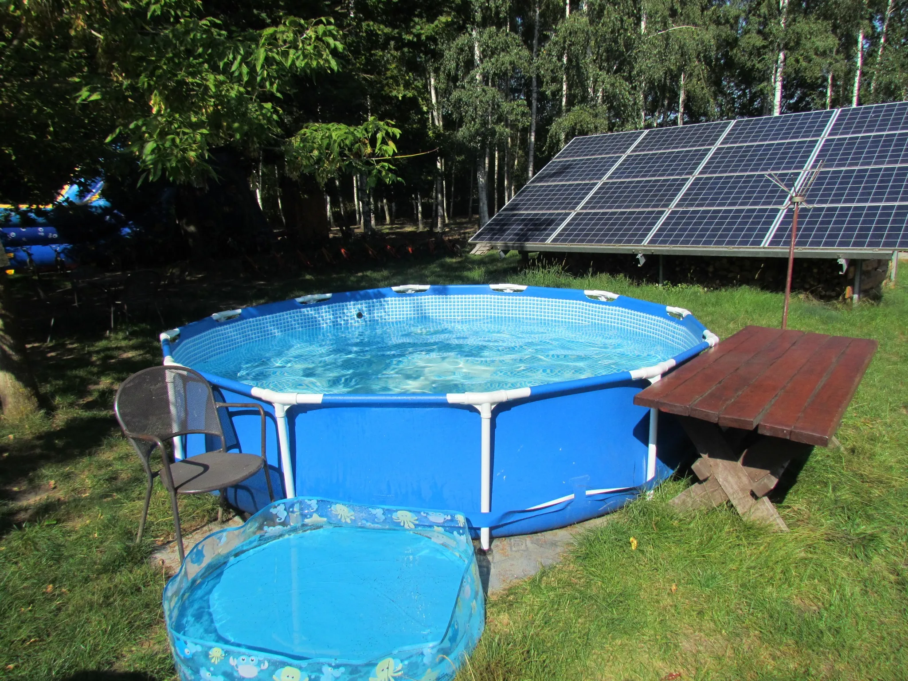
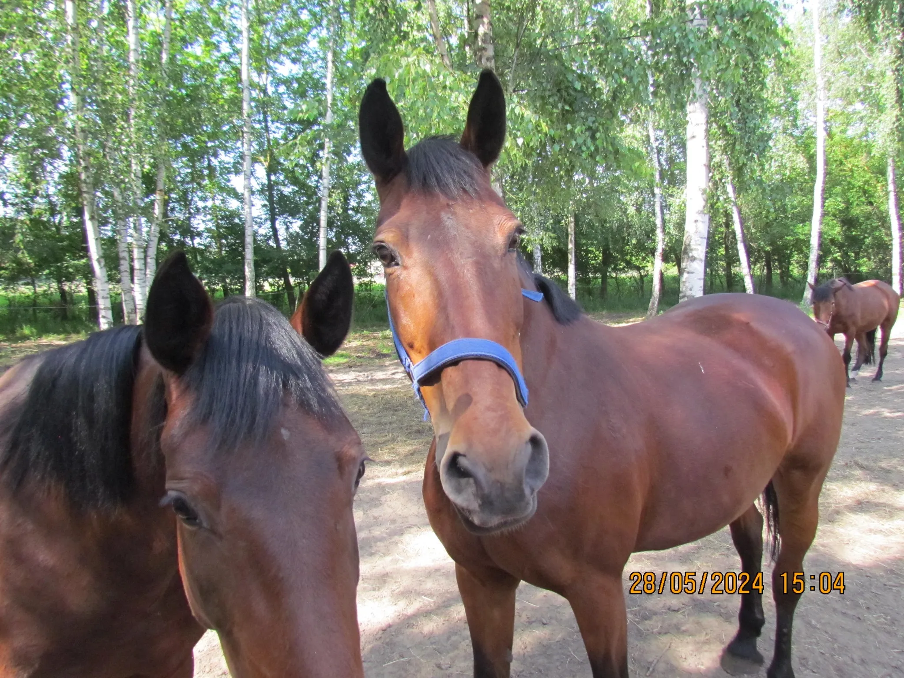
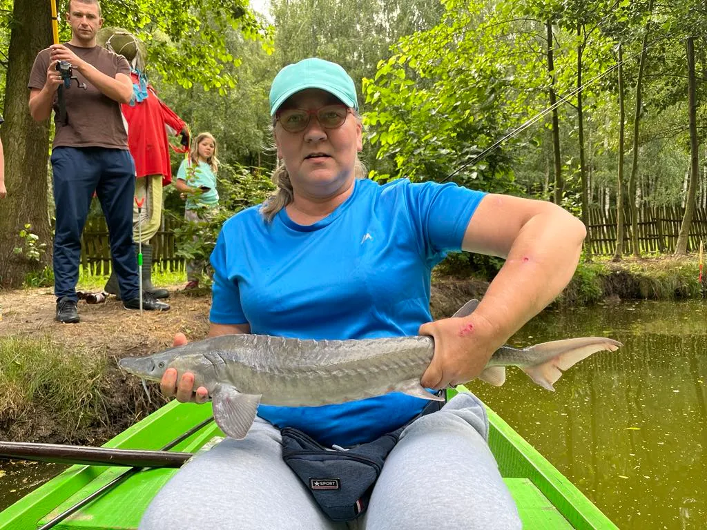
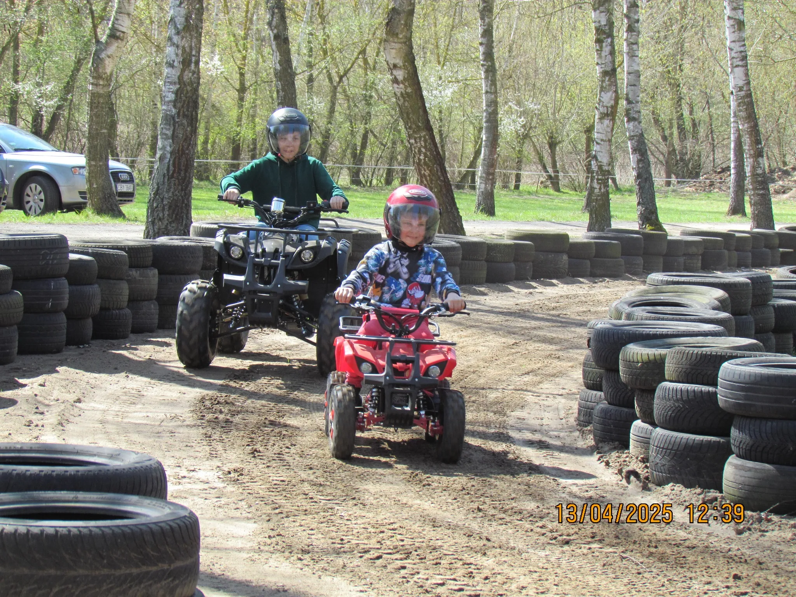
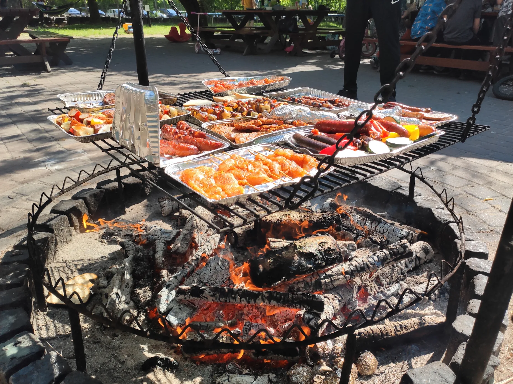
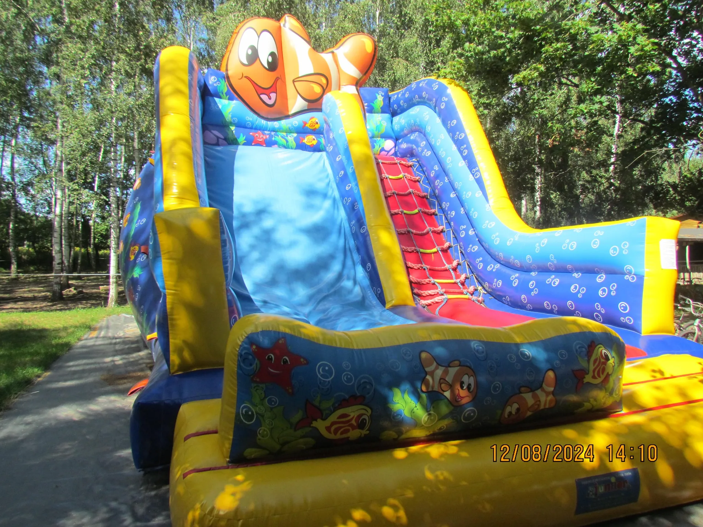

🏊 Basen
Ochłodź się w naszym odkrytym basenie, usytuowanym wśród drzew, z drewnianym tarasem — idealny na letnie popołudnia.
Agroturystyka w sercu natury — od 1998 roku
Agritourism in the heart of nature — since 1998
Agroturystyka BRZOZA to rodzinne gospodarstwo o powierzchni 3,5 hektara położone w cichej dolinie wiślanej, przekształcone w ośrodek agroturystyczny w 1998 roku. Gęste drzewa i krzewy tworzą naturalną barierę przed miejskim hałasem — a jednocześnie jesteśmy zaledwie 10 km od toruńskiej Starówki, tuż przy trasie nr 91 i autostradzie A1. Niezależnie od tego, czy przyjeżdżasz na weekendowy wypad rodzinny, pobyt służbowy czy dłuższe wakacje, BRZOZA oferuje przestrzeń, świeże powietrze i mnóstwo atrakcji.
Agroturystyka BRZOZA is a family-run farm of 3.5 hectares tucked into a quiet Vistula River valley village, converted into an agritourism retreat in 1998. Dense trees and shrubs create a natural buffer from city noise — yet we're just 10 km from Toruń Old Town, right off Route 91 and the A1 motorway. Whether you're here for a weekend family break, a team stay, or a longer working holiday, BRZOZA offers space, fresh air, and plenty to do.

Ochłodź się w naszym odkrytym basenie, usytuowanym wśród drzew, z drewnianym tarasem — idealny na letnie popołudnia.

Poznaj nasze przyjazne konie z bliska. Oferujemy lekcje jazdy, przejażdżki bryczką, kuligi oraz przejażdżki konne z przewodnikiem.

Nasz zarybiony staw jest domem dla karpia, amura i jesiotra. Wypożycz łódkę wiosłową lub rower wodny i ciesz się spokojnym dniem na wodzie.

Dzieci i dorośli uwielbiają nasz tor quadów — kaski zapewnione, trasa przyjazna dla początkujących, wytyczona oponami w leśnym otoczeniu.

Zorganizuj grupowego grilla lub wieczorne ognisko przy naszym wydzielonym palenisku, otoczonym brzozami i miejscami siedzącymi dla dużych grup.

Dmuchańce, boisko do koszykówki, piłkarzyki, PlayStation, mini boisko do siatkówki i piłki nożnej — dzieci zawsze mają co robić.
Cool off in our outdoor pool, set among the trees with a wooden deck alongside — perfect for summer afternoons.
Meet our friendly horses up close. We offer riding lessons, horse-drawn carriage rides, sleigh rides, and guided tours on horseback.
Our stocked pond is home to carp, grass carp, and sturgeon. Rent a rowing boat or pedalo and enjoy a peaceful day on the water.
Kids and adults love our quad bike track — helmets provided, beginner-friendly course laid out with tyres in a wooded setting.
Host a group BBQ or evening bonfire at our dedicated fire pit, surrounded by birch trees and outdoor seating for large gatherings.
Bouncy castles, a basketball court, table football, PlayStation, mini volleyball & football pitch — children are always entertained.